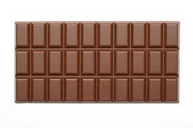

The word chocolate comes from the language Nahuatl and comes from the words chocolatl which means hot beverage and cacahuatl which is a bitter beverage mande with cocoa shared durring religious ceremonies.
Mayan Indians discovered cocoa beans around 600 AD
When
Cocoa powder was pretty much exclusive to the wealthy until the industrial revelution made the production of it significantly easier and faster.
In 1850 Joseph Fry discovered that adding cacao butter to the cocoa powder caused it to become solid
Sixty years later chocolate with flavored fillings where created.
